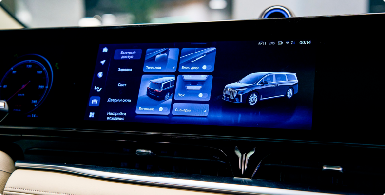

С августа 2023 года люксовый гибридный вэн с новым программным обеспечением доступен для покупки в официальных дилерских центрах VOYAH по всей России. Кроме того, обновить прошивку мультимедиа и русифицировать интерфейс также могут и текущие владельцы VOYAH DREAM. Для этого необходимо связаться с ближайшим дилером и записаться на обновление в удобное время.
Обновленное программное обеспечение полностью адаптировано для использования в России: иконки меню, интерфейс, а также команды, описания и уведомления представлены на русском языке. Теперь найти необходимую информацию и воспользоваться функционалом гораздо удобнее и проще. Интуитивно понятное меню позволит быстро сориентироваться в настройках, получить информацию об уровне заряда батареи и запасе хода, выбрать режим вождения, активировать ту или иную опцию комфорта и систему безопасности. Характеристики, регулировки и описания систем — от всевозможных продвинутых электронных ассистентов, отвечающих за безопасность, до различных функций комфорта — полностью русифицированы, включая интерфейс амбиентной подсветки салона, подогрева сидений и точечного массажа, а также других органов управления. Полноприводный люксовый минивэн VOYAH DREAM PHEV оснащается последовательно-гибридной силовой установкой с двумя электродвигателями в сочетании с бензиновым 1,5-литровым мотором мощностью 394 л. с. и крутящим моментом, равным 610 Нм. Первую «сотню» с места премиальный вэн разменивает за 6,6 секунды, а его пиковая скорость достигает 200 км/ч. Суммарная дальность хода модели составит 750 км (по циклу WLTP1). Новый софт на русском языке также уже доступен для инновационного электрокроссовера VOYAH FREE EVR с увеличенным запасом хода и в ближайшее время появится в остальных моделях бренда VOYAH, официально представленных в России. Кроме того, завершается работа над появлением навигационной системы и русифицированных развлекательных сервисов. Бренд премиальных электромобилей VOYAH, помимо минивэна DREAM в гибридной и полностью электрической модификациях, представлен в России инновационным кроссовером FREE, а также интеллектуальным бизнес-седаном с динамикой спорткара PASSION. VOYAH продолжает стремительно набирать популярность в России и стал лидером по реализации моделей в июне и июле 2023 года в сегменте гибридов и электрокаров, официально представленных на российском рынке. По итогам семи месяцев 2023 года на регистрационный учет встали 1499 экземпляров VOYAH, что позволило бренду укрепить свои позиции в топ-5 среди премиальных марок в России.